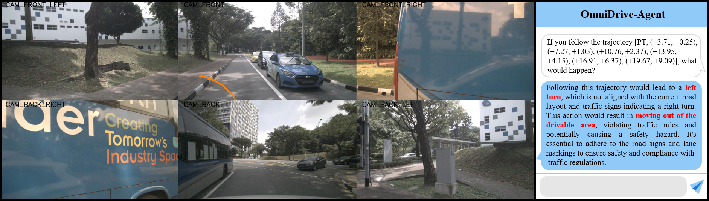
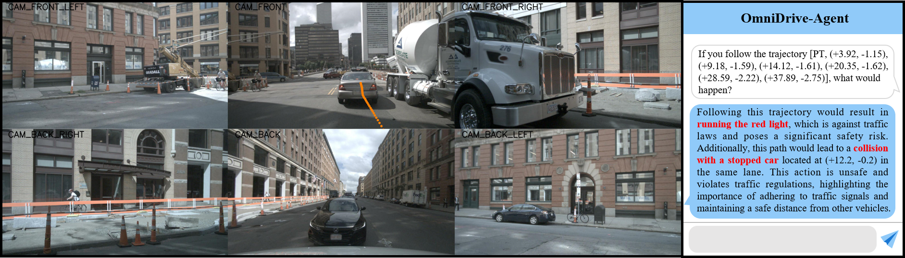

结果演示




随着人工智能技术的快速发展，多模态大语言模型 (MLLMs) 与自动驾驶的融合成为推动智能交通进步的重要方向。本文综述了 MLLMs 在自动驾驶领域的应用现状，重点分析了 OmniDrive 框架的创新性设计及其在空间感知、推理与规划方面的技术优势，并展望了这一交叉领域的未来发展趋势与挑战。
关键词：多模态大语言模型；自动驾驶；3D 空间理解；OmniDrive；视觉语言模型
自动驾驶技术作为交通技术革命的核心驱动力，正在经历从传统规则基础系统向数据驱动策略的关键转型。这一技术范式的转变不仅重塑了交通生态，更对城市机动性产生了深远影响。
传统模块化自动驾驶系统通常由感知、预测、规划等独立组件构成，各模块分工处理特定任务并通过信息传递实现协同。然而，这种设计模式存在难以避免的缺陷——模块间的信息传递会导致累积误差与信息损失。
与此同时，大语言模型（LLMs）在上下文理解、逻辑推理及复杂决策生成方面展现出独特优势，而这正是当前自动驾驶系统在开放世界场景中所欠缺的能力——例如对动态交通规则的灵活解读、少样本场景的泛化适应等。将LLM与基础视觉模型相结合，为解决自动驾驶的环境理解、多模态推理和复杂决策问题提供了新思路。
图1：大语言模型在自动驾驶中的演进
模块分工明确：感知模块负责目标检测与跟踪，预测模块用于分析外部环境并估算周边主体的未来状态，规划模块则依托于规则决策算法来确定最优行驶路线。
缺点：组件解耦设计可能导致关键信息在跨模块传递时出现损耗，并引发冗余计算问题，增大反应延迟。
以传感器收集的数据作为输入，用神经网络模型对数据进行整合和处理，直接生成驾驶指令，如方向盘的转动角度、加速踏板的踩踏深度等。
优势：避免了多模块集成过程中的错误，减少了冗余计算量，增强了视觉与传感信息表征能力。
挑战："黑箱"问题——决策过程缺乏透明性。
感知增强：提升系统对道路环境及交通规则的理解精度
决策解释：为自动驾驶系统的决策逻辑提供可理解的语言化说明
交互式规划：结合人类指令输入与实时环境感知，生成符合用户需求的驾驶计划
反事实推理：评估不同驾驶决策可能引发的潜在后果
OmniDrive框架提出了一种创新的3D视觉语言模型架构，旨在融合语言推理与空间感知能力，实现更高效的自动驾驶规划决策。该框架解决了当前自动驾驶与大语言模型结合面临的两大关键挑战：三维空间理解能力和高分辨率多视图输入处理。
图2：OmniDrive的基本框架，包括OmniDrive-Agent和OmniDrive-nuScenes两部分
OmniDrive框架提出了一种新颖的Q-Former风格的3D MLLM架构。与采用自注意力设计的LLaVA不同，Q-Former中的交叉注意力解码器通过将视觉信息压缩到稀疏查询中，使其更易于扩展到更高分辨率的输入。
OmniDrive的核心创新在于发现Q-Former架构与DETR3D、PETR(v2)等基于查询的3D感知模型家族具有显著相似性。这些模型使用稀疏3D查询，相比密集的鸟瞰图(BEV)和复杂的注意力查询，表示展现出显著优势，包括领先的性能、长距离感知能力以及联合建模地图元素的能力。
图3: OmniDrive-Agent的整体架构。左图展示了模型的整体框架，右图展示了Q-Former3D的具体结构
OmniDrive-Agent首先使用共享视觉编码器从多视图图像中提取特征，然后将这些特征与位置编码一起输入到Q-Former3D中。
在Q-Former3D中，检测查询和载体查询进行初始化并通过自注意力交换信息，随后从多视图图像中收集信息。
感知查询用于预测前景元素的类别和坐标，而载体查询经过单层MLP对齐LLM令牌的维度，进一步用于文本生成。
OmniDrive框架同时适用于多任务学习和时序建模。在多任务学习中，它为每个感知任务集成特定的Q-Former3D模块，采用统一的初始化策略。在时序建模方面，它将具有top-k分类分数的感知查询存储到记忆库中，并逐帧传播。
OmniDrive-agent的训练包括两个阶段：2D预训练和3D微调。
这一阶段旨在预训练载体查询和Q-Former，实现图像特征与大语言模型之间的更好对齐。移除检测查询后，OmniDrive模型可视为能够生成基于图像的文本的标准视觉语言模型。MLLM首先在558K图像-文本对上进行训练，在此期间除Q-Former外的所有参数都被冻结。随后使用LLaVA v1.5的指令调整数据集对MLLM进行微调。
在3D微调阶段，目标是增强模型的3D定位能力，同时尽可能保留其2D语义理解能力。原始Q-Former通过3D位置编码和时序模块进行增强。在这一阶段，使用小学习率对视觉编码器和带有Lora的大语言模型进行微调，同时使用相对较大的学习率训练Q-Former3D。
为了评估驾驶LLM代理的性能，OmniDrive提出了OmniDrive-nuScenes，这是一个建立在nuScenes数据集上的新型判断基准，包含高质量的视觉问答对，涵盖3D领域的感知、推理和规划。
图4: OmniDrive-nuScenes的在线QA生成示例，展示了2D定位、3D距离和车道-物体关联等任务
OmniDrive-nuScenes特点是完全自动化的程序性QA生成通道，使用GPT4生成高质量问答对。它将3D感知到的客观事实作为提示词输入的上下文信息，比如交通规则和模拟规划等。
基准通过以下形式提出三个长期问题：关注点、反事实推理和开环规划。这些问题需要3D空间中真正的空间理解和规划能力。
场景描述：提示GPT-4V仅基于多视图输入生成场景描述。
车道-物体关联：以文件树的形式表示物体和车道线之间的关系，基于物体的3D边界框将物体信息转换为自然语言描述。
模拟轨迹：通过深度优先搜索(DFS)算法链接车道中心线，获取所有可能的车辆轨迹路径。
专家轨迹：来自nuScenes的日志回放轨迹，被分类为不同类型以进行高级决策制定。
为了充分利用自动驾驶数据集中的3D感知标签，OmniDrive在训练过程中以在线方式生成大量类似定位的任务：
2D到3D定位：给定特定相机上的2D边界框，模型需要提供相应物体的3D属性。
3D距离：基于随机生成的3D坐标，识别相应位置附近的交通元素。
车道到物体：基于随机选择的车道中心线，列出该车道上存在的物体及其3D属性。
基于OmniDrive-nuScenes基准，研究人员进行了各种修改的消融研究，包括训练配方和模型架构。所有分析均在不使用高级命令和自我状态的情况下进行。
实验发现，Q-former2D在与确定交通灯状态等2D相关任务上表现更好。然而，QFormer3D在3D任务方面明显具有更大优势，如碰撞检测（32.2%的精度和72.6%的召回率）和可行驶区域识别（48.5%的精度和58.6%的召回率）。
具有中心线构建任务的模型（即完整模型）在可行驶区域任务中的表现优于没有车道监督的模型。在反事实推理任务上，完整模型取得了最佳性能，反事实推理的平均精度为52.3%，平均召回率为59.6%。
图5: 不同模型配置在规划与反事实推理任务上的性能对比
研究表明OmniDrive模型从Q-Former3D中获益显著，同时在场景描述任务上与Q-Former2D达到了相当的性能，METEOR得分为38.0%，CIDEr得分为68.6%，ROUGE得分为32.6%。
此外，OmniDrive模型可以同时处理多视图相机，而Q-Former2D需要单独处理每个视图，并需要效率低下的大量令牌（1500+）作为LLM的输入。
在NuScenes-QA基准测试中，在相同的相机模态下，OmniDrive模型的准确率比BEVDet+MCAN高1.3%，证明了预训练的重要性。OmniDrive模型的性能与激光雷达模态的模型相当。
图6: 不同模型在场景描述任务上的性能评估
在开环规划方面，研究将OmniDrive与先前最先进的基于视觉的规划器进行了比较。结果表明，基于MLLM的开环规划也能达到与最先进方法相当的性能。
然而，如BEV-Planner所述，编码自我状态明显提高了所有方法的指标。此外，研究发现高级命令也显著降低了碰撞率和交叉率。
先前的方法基于地面真实轨迹的相对位置提供高级命令，这对网络的回归施加了显著约束，从而降低了偏离地面真实轨迹太远的可能性。研究人员认为这种设计也是不合理的，因此在其他实验中消除了这种设置。
图7: 不同方法在开环规划任务上的性能对比
随着多模态大语言模型与自动驾驶技术的不断融合，未来发展趋势将更加注重技术整合与系统优化。安全性和可解释性是自动驾驶系统的关键要求，MLLMs在这方面有望带来突破。
图8: 当前自动驾驶范式的局限性（绿色箭头）及LLMs可能增强自动驾驶能力的方向（蓝色箭头）
本文深入分析了多模态大语言模型在自动驾驶领域的应用现状，重点探讨了OmniDrive框架的创新设计及其在3D感知、推理与规划方面的技术优势。通过分析当前技术现状和发展趋势，可以得出以下结论：
多模态大语言模型与自动驾驶的融合正在从概念验证阶段迈向实际应用。OmniDrive等研究工作证明，通过精心设计的架构，可以有效解决3D空间理解和高分辨率多视图处理等关键挑战，为自动驾驶系统带来更强的感知、推理和规划能力。
Q-Former风格的架构设计为自动驾驶中的视觉-语言融合提供了高效解决方案。OmniDrive通过将Q-Former与基于查询的3D感知模型对齐，成功实现了2D预训练知识迁移和3D空间理解能力的结合，为未来研究提供了宝贵参考。
全面的评估基准对推动技术进步至关重要。OmniDrive-nuScenes提出的多任务评估框架，特别是反事实推理任务设计，为衡量MLLMs在自动驾驶中的真实能力提供了更科学的方法，有助于揭示当前技术的优势和局限。
然而，将MLLMs完全整合到自动驾驶系统中仍面临实时性能、资源效率和鲁棒性等多重挑战。未来研究需要在模型轻量化、端到端优化、安全保障机制等方面持续突破，才能实现真正实用的MLLMs驱动的自动驾驶系统。
总体来说，多模态大语言模型为解决自动驾驶中的"黑盒"问题、长尾场景处理和人机交互等关键挑战提供了崭新思路。随着OmniDrive等前沿研究的推进，我们有理由相信，MLLMs将成为推动自动驾驶技术走向更安全、更智能、更可信未来的关键力量。
Rishi Bommasani, Drew A Hudson, Ehsan Adeli, Russ Altman, Simran Arora, Sydney von Arx, et al. On the opportunities and risks of foundation models. arXiv preprint arXiv:2108.07258, 2021.
Li Chen, Penghao Wu, Kashyap Chitta, Bernhard Jaeger, Andreas Geiger, and Hongyang Li. End-to-end autonomous driving: Challenges and frontiers. arXiv preprint arXiv:2306.16927, 2023.
Kashyap Chitta, Aditya Prakash, Bernhard Jaeger, Zehao Yu, Katrin Renz, and Andreas Geiger. Transfuser: Imitation with transformer-based sensor fusion for autonomous driving. IEEE Transactions on Pattern Analysis and Machine Intelligence, 2023.
Xinpeng Ding, Jianhua Han, Hang Xu, Wei Zhang, and Xiaomeng Li. Hilm-d: Towards high-resolution understanding in multimodal large language models for autonomous driving. arXiv preprint arXiv:2309.05186, 2023.
Shihao Wang, Zhiding Yu, Xiaohui Jiang, Shiyi Lan, Min Shi, Nadine Chang, Jan Kautz, Ying Li, and Jose M Alvarez. Omnidrive: A holistic llm-agent framework for autonomous driving with 3d perception, reasoning and planning. arXiv preprint arXiv:2405.01533, 2024.
Zhenjie Yang, Xiaosong Jia, Hongyang Li, and Junchi Yan. Llm4drive: A survey of large language models for autonomous driving. arXiv preprint arXiv:2311.01043, 2023.